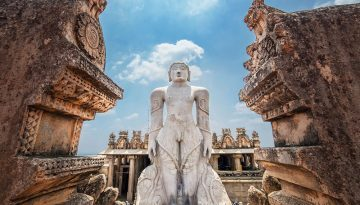
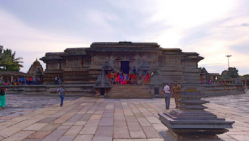
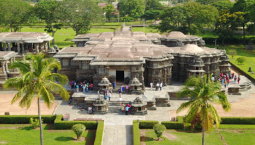
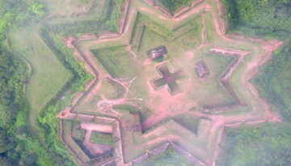
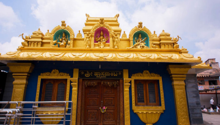
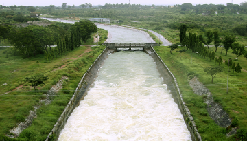
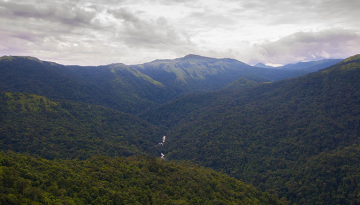

Shravanabelagola is situated about 150 km northwest of Bangalore, the capital of Karnataka.
Belur, situated on the banks of river Yagachi, 38 km from Hassan, is a world famous tourist destination.
Halebidu temple is another great example of temple architecture the twin temples of Hoysaleshwara, Kedareshwara built by Vishnuvardhana and Ballala.
Hassan is a district with several splendid tourist destinations.
The main tower at Sri Hasanamba has been newly constructed in Dravidian style.
A dam has been constructed across Hemavati River, an important tributary of the Kaveri. The dam is located at Gorur.
There is a sprawling 40-hectare reserved forest area at Bisle in Hettur hobli of Sakleshpur taluk of Hassan district.
